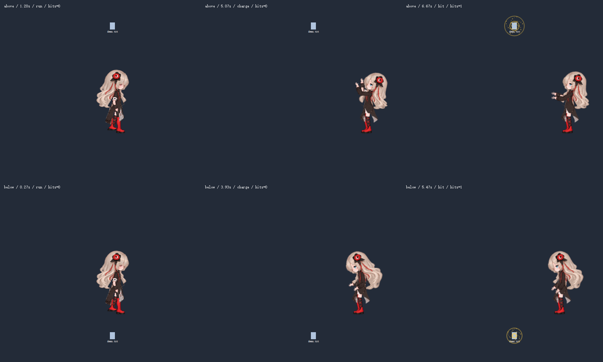
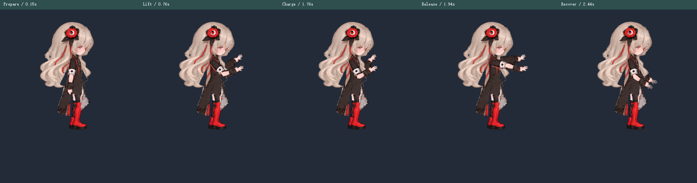
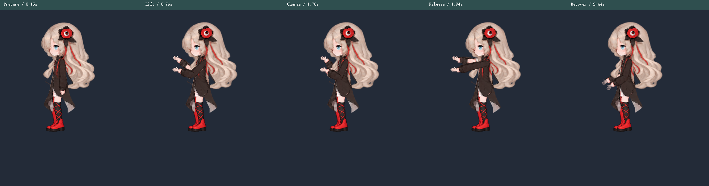

跑到合适位置，再施法
0.7.24-preview · 跑步速度为原来的 150%：300 px 人物尺寸时从 132 增至 198 px/s，步频同步联动。复用原有刹停、转身和双手施法。文件在上下方、当前角度过陡时，会先跑到屏幕内适合施法的位置，站稳后自动继续同一次请求。
以上是实际 Pet 协调逻辑、Motion 状态机和项目渲染器产生的 15 fps 取样，模拟按 60 fps 推进。人物为 300 px、预览缩放为 64%；demo.txt 为固定的测试图标，不操作真实文件。画面左上角 hits 是该请求的累计命中次数。
右键 → 双手施法 · 魔法弹 → 选择桌面文件并施法。若原地角度已合适，直接转向施法；需要调整时自动跑位。选择过程不改变文件位置；目标移动或消失会取消。仅在当前屏幕同一高度横向找站位，不跨屏、不跳跃；没有合适位置时会提示。
上 / 下方目标：跑动 → 蓄力 → 命中

原有无特效五姿势（沿用 0.7.22，骨骼与特效参数未变）


4 组聚焦检查 · 参数固定验证 · 完整过程验证 · 修改与限制 · 动作接口
文件中心、双手方向、24° 头部范围和上版启动优化保持。尚未在混合 DPI 多屏硬件上验收；动作观感仍供人工确认。